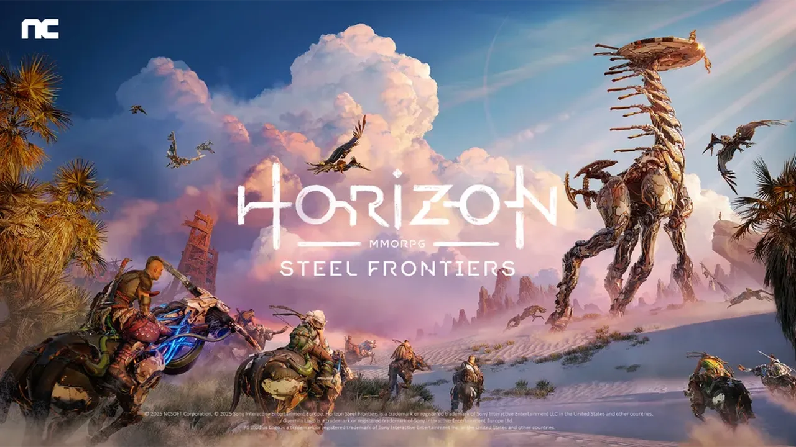

Sony and NCSoft announce MMORPG Horizon Steel Frontiers for PC and Mobil

The details:
- Announced at G-Star 2025, the title is being developed by Guild Wars studio NCSoft in partnership with Horizon franchise creators Guerrilla and sees the series enter the multiplayer space for the first time ever. “Set in the lands of the machine hunters known as the Deadlands, the game builds on Horizon’s signature hunting-action gameplay while introducing advanced MMORPG systems, featuring deeply customizable combat and extensive player freedom,” the game’s description reads.
- Steel Frontiers marks the first time that the Horizon series will not be available on a PlayStation console since its debut in 2017, with Sony seemingly having no plans to bring the game to PS5. However, the game will be playable on PC exclusively through NCSoft’s “Purple” app
- Unsurprisingly, the reaction to Steel Frontiers being a mobile game has been mixed, but Guerrilla has confirmed on X that it is still working on new Horizon projects, teasing that there is “more to come.”